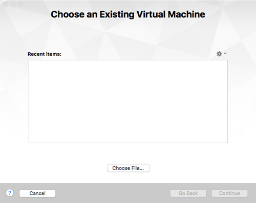
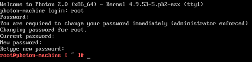
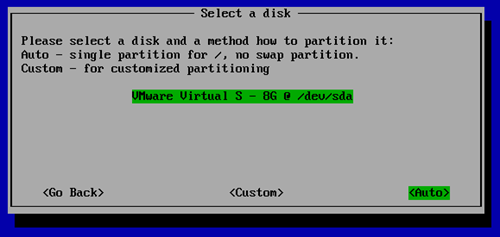
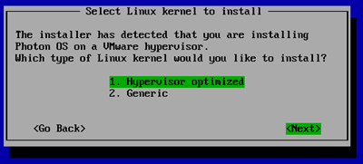
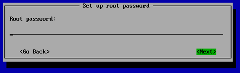
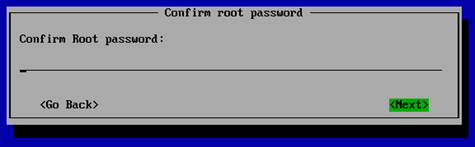
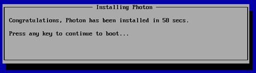
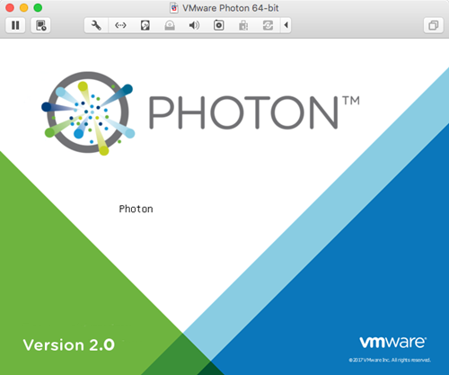

Running Photon OS on Fusion
This guide describes how to get started using Photon OS as a virtual machine within VMware Fusion. It provides instructions for downloading Photon OS (as an OVA or ISO file), describes the various installation options, and walks through the steps of installing the Photon OS distribution on Fusion. Once Photon OS is installed, this document shows how to deploy a containerized application in Docker with a single command.
- About Photon OS
- Requirements
- Deciding Whether to Use an OVA or ISO
- Downloading Photon OS
- Importing the OVA for Photon OS 2.0
- Installing the ISO Image for Photon OS 2.0
- Deploying a Containerized Application in Photon OS
- Installing Photon OS 1.0
Note: If you want to upgrade an existing Photon 1.0 VM, refer to the instructions in Upgrading to Photon OS 2.0.
About Photon OS
Photon OS™ is an open source Linux container host optimized for cloud-native applications, cloud platforms, and VMware infrastructure. Photon OS provides a secure run-time environment for efficiently running containers. For an overview, see https://vmware.github.io/photon/.
Requirements
Using Photon OS within VMware Fusion requires the following resources:
| Resource | Description |
|---|---|
| VMware Fusion | VMware Fusion (v7.0 or higher) must be installed. The latest version is recommended. |
| Memory | 2GB of free RAM (recommended) |
| Storage | Minimal Photon install : 512MB of free space (minimum); Full Photon install : 4GB of free space (minimum); 8GB recommended. |
| Distribution File | Photon OS ISO or OVA file downloaded from bintray ( https://bintray.com/vmware/photon/). |
Resource requirements and recommendations vary depending on several factors, including the host environment (for example, VMware Fusion and VMware vSphere), the distribution file used (ISO or OVA), and the selected installation settings (for example, full or basic installation).
Note: The setup instructions in this guide use VMware Fusion Professional version 8.5.8, as per the following screenshot.
Deciding Whether to Use an OVA or ISO
The first step is decide whether to use the OVA or ISO distribution to set up Photon OS.
- OVA import: Because of the nature of an OVA, you're getting a pre-installed version of Photon OS. Choose the OVA with Hardware Version 11 (not 13). The OVA benefits from a simple import process and some kernel tuning for VMware environments. However, because it's a pre-installed version, the set of packages that are installed are predetermined. Any additional packages that you need can be installed using tdnf.
- ISO install: The ISO, on the other hand, allows for a more complete installation or automated installation via kickstart.
If you're just looking for the fastest way to get up and running, start with the OVA.
Downloading Photon OS
Once you've decided which way to install, you'll need to download the correct binaries. Go to the following Bintray URL and download the latest release of Photon OS:
https://bintray.com/vmware/photon/
For instructions, see Downloading Photon OS.
Importing the OVA for Photon OS 2.0
Importing the OVA image is the easiest way to create a Photon OS VM.
Step 1: Start the Import Process
After you have downloaded the latest Photon OS OVA image (OVA with Hardware Version 11) into a folder of your choice, open VMware Fusion. From the File menu, choose Import …. Fusion prompts you to choose an existing virtual machine.

Choose the Choose File … button to locate and select the Photon OS OVA, then choose Continue.
Step 2: Specify the Name and Storage Location
Provide the name and storage location for your Photon OS VM, then choose Save.
Review the Photon OS License Agreement, then choose Accept to start the import process.
Step 3: Configure VM Settings
After the OVA is imported, Fusion displays a confirmation that the import has completed and a summary of the settings for your Photon OS VM. The following screen shot is an example (your settings may vary).
Important: Choose Customize Settings to change the operating system (as recognized by the hypervisor) for the newly imported VM.
Choose General.
Click the selection box next to OS, select Linux , and then select VMware Photon 64-bit.
Close the settings window. Fusion prompts you to verify that you want to change the operating system.
Click Change. Your Photon OS VM is ready to power on.
Step 4: Power on the VM
Power on the Photon OS VM. Fusion may ask you whether you want to upgrade this VM.

How you respond depends on which hardware version (13 or 11) that you want to use. Upgrade if you need to use devices supported only in hardware version 13. Don't upgrade if you want to be compatible with older tools that are supported in hardware version 11.
Step 5: Update Login Credentials
After the VM is booted, Fusion prompts you to log in.
Note : Because of limitations within OVA support on Fusion, it was necessary to specify a default password for the OVA option. However, all Photon OS instances that are created by importing the OVA will require an immediate password change upon login. The default account credentials are:
| Setting | Value |
|---|---|
| Username | root |
| Password | changeme |
After you provide these credentials, Fusion prompts you to create a new password and type it a second time to verify it. For security, Photon OS forbids common dictionary words for the root password. Once logged in, you will see the shell prompt.

Once complete, proceed to Deploying a Containerized Application in Photon OS.
Installing the ISO Image for Photon OS 2.0
After you have downloaded the latest Photon OS ISO image into a folder of your choice, open VMware Fusion.
Step 1: Start the Installation Process
From the File menu, choose New.
From the Select the Installation Method dialog, select Install from disc or image, and then choose Continue.
Step 2: Select the ISO Image
Drag a disc image onto the window or choose Use another disc or disc image..., choose the ISO file you want, and then choose Continue.
Step 3: Select the Operating System
On the Choose Operating System dialog, select Linux in the left-hand column and VMware Photon 64-bit in the right-hand column.
Choose Continue.
Step 4: Select the Virtual Disk (Optional)
If you are using a Fusion version that is older than Fusion 8, you might see the following dialog.
If you see this dialog, unless you're installing into an existing machine, choose Create a new virtual disk from the Choose a Virtual Disk dialog, and then choose Continue.
Note: Fusion v8 and later automatically defaults to creating a new 8GB disk and formats it automatically. If you want to use an existing disk, or if you want to pre-allocate all 8GB, go into VM Settings, choose Add Device, and choose either New Hard Disk or Existing Hard Disk. Expand Advanced options and configure whether you want to pre-allocate disk space (disabled by default) or split into multiple files (enabled by default).
Step 5: Configure VM Settings
Important: Before you finish creating the Photon OS Virtual Machine, we strongly recommend that you customize the virtual machine and remove any unwanted devices that are not needed for a container run-time environment.
To remove unnecessary devices, choose Customize Settings.
First, choose a name for your Virtual Machine, along with the folder into which you create the Virtual Machine (or accept the default folder).
Choose Save. The virtual machine will be created. The Settings screen allows you to customize virtual hardware for the new virtual machine. If it does not automatically appear, open Settings from the Virtual Machine menu bar.
You can remove (recommended) the following components that are not used by Photon OS:
- Select Display and ensure that the Accelerate 3D Graphics option is unchecked (it should be unchecked, by default). Select Show All to return to the VM Settings.
- Select CD/DVD (IDE) and ensure that the Connect CD/DVD Drive box is checked (it should be checked by default). Select Show All to return to the VM Settings.
- Select Sound Card, un-check the Connect Sound Card Option, and click Remove Sound Card. Choose Remove to confirm your action. Select Show All to return to the VM Settings.
- Select USB & Bluetooth and uncheck the Share Bluetooth devices with Linux setting. Select Show All to return to the VM Settings.
- Select Printer and press the Remove Printer Port button in the bottom left hand corner. Choose Remove to confirm your action. Select Show All to return to the VM Settings.
- Select Camera and press the Remove Camera button in the bottom left hand corner. Choose Remove to confirm your action. Select Show All to return to the VM Settings.
- Select Advanced and ensure that the Pass Power Status to VM option is unchecked (it should be unchecked, by default). Select Show All, but do not close the VM Settings window.
By default, Photon OS is configured with a disk size of 8GB. However, Photon OS uses only the portion of disk space it needs, usually much less that the entire disk size. If you want to pre-allocate the entire disk size (reserving it entirely for Photon OS instead), select Hard Disk, expand Advanced options, and check Pre-allocate disk space (by default, it is unchecked). Select Show All to return to the VM Settings.
Step 6: Configure a Secure Boot (Optional)
Note: If you want to configure a secure boot for the Photon OS VM you created, edit its .vmx file and add the following line:
firmware = "efi"
The EFI boot ensures that the ISO content is signed by VMware and that the entire stack is secure.
After you have made the customizations you want, close the Virtual Machine Settings window. You are now ready to boot and begin the installation process.
Step 7: Power On the VM
Return to the Fusion main menu, select the Photon OS Virtual Machine, and click Start Up (you can also choose Start Up from the Virtual Machine menu).
Fusion powers on the host and starts the installation. Within a few seconds, Fusion displays the Photon OS installer boot menu.
Press the Enter key on your keyboard to start installing.
Read the License Agreement and press the Enter key to accept.
Step 8: Configure the Partition
The Installer will detect one disk, which should be the 8GB volume configured as part of the virtual machine creation.

Choose Auto to have the installer automatically allocate the partition, or choose Custom if you want to configure individual partitions, and then press the Enter key.
Note: If you choose Custom, the installer displays the following screen.
For each custom partition, choose Create New and specify the following information:
Size - Preallocated size of this partition, in MB.
Type - One of the following options:
- ext3 - ext3 file system
- ext4 - ext4 file system
- swap - swap partition
Mountpoint - Mount point for this partition.
Choose OK and press the Enter key. When you are done defining custom partitions, choose Next and press the Enter key.
The installer prompts you to confirm that you want to erase the entire disk.
Choose Yes and press the Enter key to accept and proceed with the installation.
Step 9: Select an Installation Option
After partitioning, the installer prompts you to select one of three installation options:
Each install option provides a different run-time environment. Select the option that best meets your requirements.
| Option | Description |
|---|---|
| Photon Minimal | Photon Minimum is a very lightweight version of the container host runtime that is best suited for container management and hosting. There is sufficient packaging and functionality to allow most common operations around modifying existing containers, as well as being a highly performant and full-featured runtime. |
| Photon Full | Photon Full includes several additional packages to enhance the authoring and packaging of containerized applications and/or system customization. For simply running containers, Photon Full will be overkill. Use Photon Full for developing and packaging the application that will be run as a container, as well as authoring the container, itself. For testing and validation purposes, Photon Full will include all components necessary to run containers. |
| Photon OSTree Server | This installation profile will create the server instance that will host the filesystem tree and managed definitions for rpm-ostree managed hosts created with the "Photon OSTree Host" installation profile. Most environments should need only one Photon OSTree Server instance to manage the state of the Photon OSTree Hosts. Use Photon OSTree Server when you are establishing a new repository and management node for Photon OS hosts. |
Note: The option you choose determines the disk and memory resources required for your installation.
Select the option you want and press the Enter key.
Step 10: Select the Linux Kernel
The installer prompts you to select the Linux kernel to install:

- Hypervisor optimized means that any components that are not needed for running under a VMware hypervisor have been removed for faster boot times.
- Generic means that all components are included.
Step 11: Specify the Hostname
The installer prompts you for a hostname and suggest a randomly generated, unique hostname that you can change if you want.
Press the Enter key.
Step 12: Specify the System root Password
Note: Photon OS will not permit commonly used dictionary words to be set as a root password.
The installer prompts you to enter the system root password. Type the password, and then press the Enter key.

Confirm the root password by typing it a second time.

Press the Enter key. The installer proceeds to install the software. Installation times will vary based on the system hardware and installation options you selected. Most installations complete in less than one minute.
Once finished, the installer displays a confirmation message (which includes how long it took to install Photon OS) and prompts you to press a key on your keyboard to boot the new VM.

Step 13: Reboot the VM and Log In
Press any key on the keyboard and the virtual machine will reboot into Photon OS.

As the initial boot process begins, the installer displays the Photon splash screen, and then a login prompt.
At the login prompt, enter root as the username and provide the password chosen during the installation.
You have now successfully setup Photon OS and are ready to use your container run-time environment. Proceed to the next section to deploy a containerized application.
Deploying a Containerized Application in Photon OS
Now that you have your container runtime environment up and running, you can easily deploy a containerized application. For this example, you will deploy the popular open source Web Server Nginx. The Nginx application has a customized VMware package that is published as a dockerfile and can be downloaded, directly, through the Docker module from the Docker Hub.
Step 1: Run Docker
To run Docker from the command prompt, enter the following command, which initializes the docker engine:
systemctl start docker
To ensure Docker daemon service runs on every subsequent VM reboot, enter the following command:
systemctl enable docker
Step 2: Run the Nginx Web Server
Now the Docker daemon service is running, it is a simple task to "pull" and start the Nginx Web Server container from Docker Hub. To do this, type the following command:
docker run -d -p 80:80 vmwarecna/nginx
This pulls the Nginx Web Server files and appropriate dependent container filesystem layers required for this containerized application to run.
After the docker run process completes, you return to the command prompt. You now have a fully active website up and running in a container.
Step 3: Test the Web Server
To test that your Web Server is active, run the ifconfig command to get the IP address of the Photon OS Virtual Machine.
The output displays a list of adapters that are connected to the virtual machine. Typically, the web server daemon will be bound on "eth0."
Start a browser on your host machine and enter the IP address of your Photon OS Virtual Machine. You should see a screen similar to the following example as confirmation that your web server is active.
You can now run any other containerized application from Docker Hub or your own containerized application within Photon OS.
Installing Photon OS 1.0
This section provides setup instructions for Photon OS 1.0.
Photon OS 1.0 Prerequisites
In order to install and start using Photon OS with VMware Fusion the following pre-requisites must be satisfied:
- VMware Fusion or VMware Workstation must be installed
- Recommended 2GB of free RAM
- Recommended at least 300MB of free disk space
- Photon OS ISO or OVA
Importing the Photon OS 1.0 OVA
Using the OVA is the easiest way to create a Photon OS VM. Once you’ve downloaded the OVA, open VMware Fusion and select, “Import …” from the File menu. This will open the “Choose an Existing Virtual Machine” wizard. Use the “Choose File …” button to locate and select the Photon OS OVA. Note: The “Import” operation is specific to Fusion. For Workstation users, simply double-clicking on the OVA will start the import.

Click “Continue” and provide the name and storage location for your Photon OS VM. Then, click "Save."

Clicking “Save” will immediately present the Photon OS EULA. In order to start the import process, you'll need to click "Accept" to accept the EULA.

Once the import is complete, you should get confirmation that the import was Finished and a summary of the settings for your Photon OS VM. Click “Customize Settings” to change the operating system, as recognized by the hypervisor. Within the "General" System Settings for the newly imported VM, click the selection box next to "OS" and select, "VMware Photon 64-bit," as shown below.

Close the settings window and your Photon OS VM is ready to power on.

Clicking “Finish” will immediately power on your Photon OS VM. Once the VM is booted, you will be presented with a login prompt. Because of limitations within OVA support on Fusion and Workstation, it was necessary to specify a default password for the OVA option. However, all Photon OS instances that are created by importing the OVA will require an immediate password change upon login. The default account credentials are:
Username: root
Password: changeme
As soon as you enter these credentials, you will be forced to create a new password by entering the new password twice before you can access the shell prompt.

Installing Photon OS 1.0 on VMware Fusion from an ISO Image
With the latest Photon OS ISO image downloaded into a folder of your choice, Open VMware Fusion and Select “File->New.” The following screen will appear:

Select "Create a custom virtual machine" from the "Select the Installation Method" dialog, then, click continue. On the "Choose Operating System" dialog, select, "Linux" in the left-hand column and "VMware Photon 64-bit" in the right-hand column.

Unless you're installing into an existing machine, select, "Create a new virtual disk" from the "Choose a Virtual Disk dialog, then click "Continue."

You're almost finished; but, before finishing the Photon OS Virtual Machine Creation, we strongly recommend that you customize the virtual machine and remove any unwanted devices that are not needed for a container runtime environment.

To remove unnecessary devices, from the screen shown below, select “Customize Settings."
First, choose a name for your Virtual Machine and the folder into which you would like to create the Virtual Machine. If the default folder of “Virtual Machines” is acceptable, click “Save”.

The virtual machine will be created and a new screen will appear, as shown below, that will allow virtual hardware customization to the new virtual machine. If it does not automatically appear, open "Settings" from the Virtual Machine menu bar.

It is our recommendation that the following components are removed, since they’re not used by Photon OS:
- Select “Sound Card” and un-tick the “Connect Sound Card” Option and click "Remove Sound Card." Confirm your action and return to the VM Settings by clicking “Show All.”
- Select “Camera” and press the “Remove Camera” button in the bottom left hand corner, confirm your action and then select “Show All” to return to the VM Settings.
- Select “Printer” and press the “Remove Printer Port” button in the bottom left hand corner, confirm your action and then select “Show All” to return to the VM Settings.
- Select “USB & Bluetooth” and uncheck the “Share Bluetooth devices with Linux” setting and then select “Show All”
- Select “Display” and ensure that the “Accelerate 3D Graphics” option is unchecked (it should be unchecked, by default) and, then, return to the VM Settings by selecting “Show All.”
- Select “Advanced” and ensure that the “Pass Power Status to VM” option is unchecked. Select “Show All," but do not close the VM Settings window.
At this stage we have now made all the necessary customizations and we are ready to select the Photon OS ISO image to boot and begin the installation process.
From the Virtual Machine Settings menu in Fusion, select "CD/DVD (IDE)" and, as shown below, point to the downloaded Photon OS ISO and ensure that there is a check in the "Connect CD/DVD Drive" box.

Return to the Fusion main menu, select the Photon OS Virtual Machine and press the “Play” button to power on the host and start the installation. Within a few seconds the Photon OS Installer Boot Menu will appear.

Select – “Install” to proceed.

After you accept the EULA, the Installer will detect one disk, which should be the 8GB volume configured as part of the virtual machine creation. Select the disk and press enter. You will be prompted to confirm it is okay to erase the entire disk, select “Yes” to accept and proceed with the installation. You will now be presented with four installation options:

Each install option provides a different runtime environment, depending on your requirements:
Photon Minimal: Photon Minimum is a very lightweight version of the container host runtime that is best suited for container management and hosting. There is sufficient packaging and functionality to allow most common operations around modifying existing containers, as well as being a highly performant and full-featured runtime.
Photon Full: Photon Full includes several additional packages to enhance the authoring and packaging of containerized applications and/or system customization. For simply running containers, Photon Full will be overkill. Use Photon Full for developing and packaging the application that will be run as a container, as well as authoring the container, itself. For testing and validation purposes, Photon Full will include all components necessary to run containers.
Photon OSTree Host: This installation profile creates a Photon OS instance that will source its packages from a central rpm-ostree server and continue to have the library and state of packages managed by the definition that is maintained on the central rpm-ostree server. Use Photon OStree Hosts when you are interested in experimenting with the concept of a centrally authored and maintained OS version. This concept of treating the OS as a versioned, atomic entity can simplify lifecycle and security management at scale.
Photon OSTree Server: This installation profile will create the server instance that will host the filesystem tree and managed definitions for rpm-ostree managed hosts created with the “Photon OSTree Host” installation profile. Most environments should need only one Photon OSTree Server instance to manage the state of the Photon OSTree Hosts. Use Photon OSTree Server when you are establishing a new repository and management node for Photon OS hosts.
For the purposes of this how-to guide, select option 1, “Photon Minimal.” Once this selection is highlighted, press the Enter key on your keyboard.
You will now be prompted for a hostname. Photon OS will prepopulate a randomly generated, unique hostname; you can either use this suggestion or enter your own hostname. After selecting a hostname and pressing “Enter,” you will be prompted to first enter and, then, confirm the system root password.
Note: Photon OS will not permit commonly used dictionary words to be set as a root password.
After confirming the password, the installation process should begin. Installation times will vary based on system hardware and installation options, but most installations complete in less than one minute. Once the install is complete you will get a confirmation prompt on the screen stating “Congratulations, Photon has been installed in xx secs, Press any key to continue to boot…” - Press any key and the virtual machine will reboot into Photon OS.

As the initial boot process begins, you will see the Photon splash screen before you are taken to a login prompt.
At the login prompt, enter “root” as the username and provide the password chosen during the installation.
You have now successfully setup Photon OS and are ready to use your container runtime environment.
Installing a Containerized Application on Photon OS 1.0
Now that you have your container runtime environment up and running, you may be wondering, “what can I do now?” A command prompt is not the most exciting! To help to demonstrate the ease in which you can deploy a containerized application, we will showcase how you can quickly get a Web Server up and running. For this example, we will use the popular open source Web Server Nginx. The Nginx application has a customized VMware package and published as a dockerfile and can be downloaded, directly, through the Docker module from the Docker Hub.
To run Docker from the command prompt, enter the command below to initialize the docker engine:
systemctl start docker
To ensure Docker daemon service runs on every subsequent VM reboot, enter:
systemctl enable docker
Now the Docker daemon service is running, it is a simple task to “pull” and start the Nginx Web Server container from Docker Hub. To do this, type the following command:
docker run -d -p 80:80 vmwarecna/nginx
This will then pull the Nginx Web Server files and appropriate dependent container filesystem layers to ensure this containerized application can run. You will see a screenshot similar to below, as the container and dependencies are downloaded and the container is prepared to run:

Once “docker run” process is completed, you will be returned to the command prompt. You now have a fully active website up and running in a container!
To test that your Web Server is active, we need to get the IP address of the Photon OS Virtual Machine. To get the IP address, enter the following command ifconfig. This will now display a list of adapters connected to the virtual machine. Typically, the web server daemon will be bound on “eth0.”
Start a browser on your host machine and enter the IP address of your Photon OS Virtual Machine. The following screen will appear and that will show that your web server is active: -

You can now run any other containerized application from Docker Hub or your own containerized application within Photon OS.